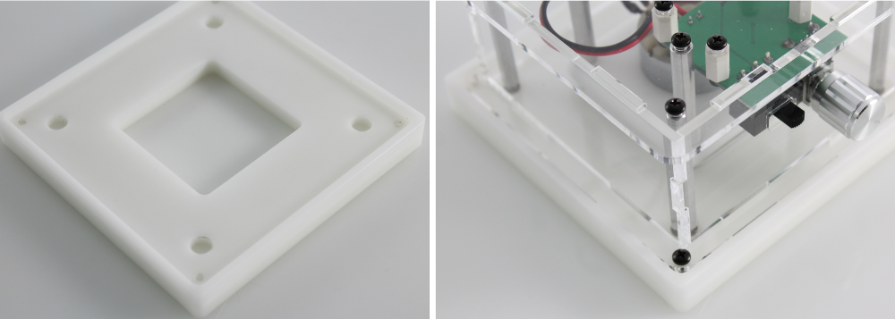
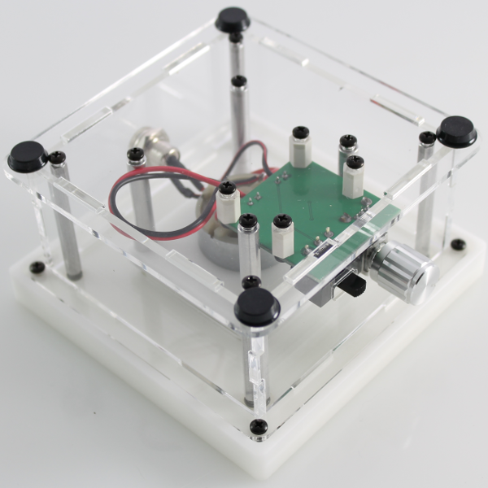
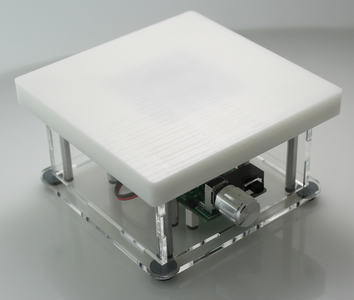

Step 5: Final top assembly and testing¶
Top assembly¶
Parts: white stir-plate top, 4 x enclosure screws, 4 x rubber feet
Place the white machined top flat on the table with smooth side down. Place the assembled stir-plate upside down onto the top. The motor/magnet hub will sit into the recssed center. Screw the top in place with the last 4 enclosure screws. Finally, place the four rubber feet into the corners of the base.


Finished product¶
